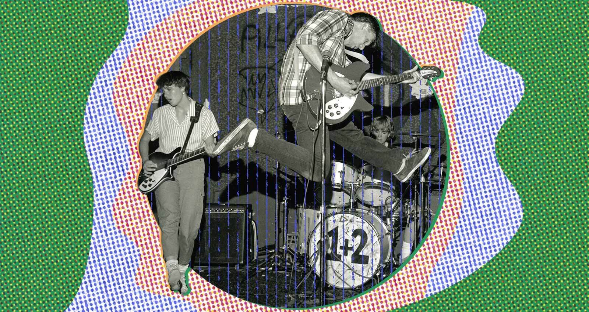

Indie Rock
O indie rock (derivação de rock independente) é um subgênero de música rock que se originou nos Estados Unidos, Reino Unido e Nova Zelândia entre os anos 1970 e 1980.[1] Originalmente usado para descrever gravadoras independentes, o termo tornou-se associado ao estilo de música que produziam e foi inicialmente usado de forma mesclada com o termo rock alternativo ou "guitar pop rock".[2] Na década de 1980, o uso do termo "indie" (ou "indie pop") começou a mudar de sua referência às gravadoras para descrever um estilo de música produzido em selos punk e pós-punk.[3] Durante a década de 1990, bandas grunge e punk revival estadunidenses e bandas de britpop no Reino Unido invadiram o mainstream e o termo "alternativo" perdeu seu significado contracultural original. O termo "indie rock" tornou-se associado às bandas e gêneros que permaneceram dedicados ao seu status independente.[4] No final da década de 1990, o indie rock desenvolveu vários subgêneros e estilos relacionados, incluindo lo-fi, noise pop, emo, slowcore, post-rock e math rock.[4] Nos anos 2000, as mudanças na indústria fonográfica e a crescente importância da internet permitiram que uma nova onda de bandas de indie rock alcançasse o sucesso no mainstream, levantando questões sobre seu significado como termo.[5] No início dos anos 2000, um novo grupo de bandas que tocava uma versão despojada e fiel às raízes do rock com guitarras surgiu no mainstream. O avanço comercial dessas cenas foi liderado por quatro bandas: The Strokes, The White Stripes, The Hives e The Vines. A cultura emo também invadiu o mainstream no início dos anos 2000.[6] No final da década, a proliferação de bandas indie estava sendo referida pejorativamente como um "aterro indie",[7] com o termo sendo usado por alguns críticos e pela mídia especializada como subgênero para um determinado tipo da banda indie dos anos 2000, da mesma forma que o britpop é usado para classificar a música britânica com guitarras nos anos 90.[8][9][10]